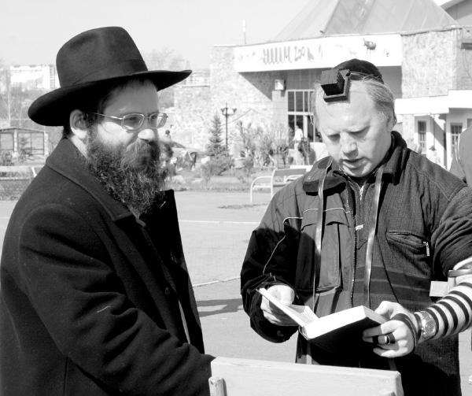

Jewish Revival in a Former Top Secret Soviet City
We visited distant Chelyabinsk, which is located southeast of the Ural Mountains, and met the shliach, Rabbi Meir Kirsch. He told us of the revival of Jewish life there under difficult conditions.

“It happened when we were in the middle of Shacharis. We heard a sudden boom and then the sky lit up,” said shliach to Chelyabinsk, Russia, Rabbi Meir Kirsch. “People ran out of the shul. We then heard explosions. At first I was sure terrorists were shooting missiles at the shul.
“Everybody was frightened. It was feared this was only the beginning and that more serious explosions would follow later. When we went out to the street, we saw that everyone had gone out of their houses. That was when we realized that the shul was not the target but it was something on a much larger scale. People saw shards of metal on the ground and thought a plane had exploded and its remnants scattered all over.
“It took a long time until we found out that we had lived through the rare occurrence of a falling meteor, the largest known natural object to have entered the Earth’s atmosphere in over a hundred years. Local radio broadcasters reported about many injured, they said it was thousands of people, but nobody in our community was hurt. Only property was damaged.”
The explosion took place in the Ural Mountains east of the city, and was caused by a ten ton meteorite. It was estimated that the energy released upon its entering the atmosphere was 500 kilotons, 20–30 times more energy than was released from the atomic bomb detonated at Hiroshima.
People interested in the rare occurrence showed up from all over the world and those who wanted souvenirs came en masse to collect pieces of metal that had fallen from the sky.
“We used this event to strengthen people’s faith in the Creator of the world,” said R’ Kirsch. “I explained that Hashem sent us a clear message that there is Someone in charge.”
***
R’ Kirsch and his wife Devorah Leah have been working in Chelyabinsk for seventeen years. Upon their arrival in the city, they saw a devastated community whose shul was barely operational. Since then, life in Chelyabinsk has changed drastically. One of the first things they did was start a school. Then they received the shul building back from the government. Under communism, it had been turned into a warehouse. They also started shiurim, a kosher communal kitchen, summer camps for boys and girls and other activities and programs that breathed new life and Jewish pride into the community.
WHEN THE SHLIACH HAD TO DRAW A BROOM
Chelyabinsk is a Russian city on the border of Europe and Asia, southeast of the Ural Mountains on the Miass River. Chelyabinsk is one of the major industrial centers of Russia. Heavy industry predominates, especially metallurgy and military machinery. There are also large electronics factories.
“In the past, the city was known mainly because of the military industry, factories that produced tanks and Katyusha rockets. All of these factories have been transformed into factories that make pipes and tractors,” said R’ Kirsch, pointing out that this is a fulfillment of a messianic prophecy.
Previously, Chelyabinsk was one of the ten closed Russian cities because of the military factories. About 8000 Jews lived there, most of who worked in these factories. 70 years of communism nearly eradicated all signs of Jewish identity. Unlike other cities in which there existed secret underground Jewish activity, in Chelyabinsk there were no brissin or Jewish weddings for many years.
“We arrived in 5756. Before that, after our marriage in 5754, we lived in Crown Heights and I learned in the kollel. We planned on going on shlichus and kept on looking for the right place.”
Suggestions were made and rejected until one day a suggestion was made by R’ Lazar, chief rabbi of Russia, that they go to Chelyabinsk.
“We arranged that I would go for two weeks after Pesach in order to check it out. I had heard of Chassidic towns in Russia and had read many books that described Chassidic life, but this city was unfamiliar to me.
“One night of Chol HaMoed Pesach something extraordinary happened. I was reading R’ Folya Kahn’s book of stories, Shmuos V’Sippurim and came across a story in which the Rebbe Rashab sent R’ Yaakov Landau to visit some cities in Russia. Before he left, R’ Landau showed the Rebbe the train itinerary. The Rebbe noticed how Chelyabinsk is far from any other place. He commented that the world is not mistaken when it says that the country needs to be smaller and the head of the czar larger to be able to rule the entire area.
“I was taken aback. This was the first time I was reading about Chelyabinsk in a Chassidic source. How amazing it was to come across this reference a few days after it was suggested to me as a place of shlichus.
“There were many people who thought this forsaken city was not for us. We did not know the language and certainly not the mentality. We decided to write to the Rebbe and ask for his counsel. The answer in the Igros Kodesh left no room for doubt. The Rebbe wrote that there are people capable of accomplishing big things but they are always looking for someone to act in their place despite having seen successes. However, in Lubavitch it is different. If there is a possibility of taking action, action is taken and one does not wait for someone else to get the job done.
“I did not need more than this. I was in Chelyabinsk by Lag B’Omer and I met with the person I was supposed to meet. Two weeks later I returned to Crown Heights. My family and I set out before Tishrei to prepare another point on the globe for Moshiach.”
R’ Kirsch says the beginning was quite difficult:
“We did not know the language. I speak Yiddish well but that did not help me since many Jews were young and spoke only Russian. I remember that when we wanted to buy something in the store, we would draw the item on a paper so they would know what we wanted. I’ll never forget the broom I drew in the housewares store.
“When I addressed the community, I spoke in Yiddish and the head of the community translated it into Russian. I realized, on more than one occasion, that his translation was nothing like what I meant to say, but we tried not to despair.”
R’ Kirsch recalls that the hardest time was three years after he had arrived, when a member of the community, a contractor, committed to renovating the shul. Their initial joy turned to dismay when it turned out that the man had registered the shul under his own name.
“The shul building had been confiscated by the communists and made into a warehouse. When we arrived, pressure was exerted on the mayor to give it back to the Jewish community. One man, this contractor who had many connections and who had committed to renovating the building, raised money for this purpose from all the Jews in the city as well as from wealthy people from other cities in Russia.
“When he completed the renovations to the satisfaction of all, he signed a document in front of the mayor which registered the property under his name. ‘Continue davening as usual,’ he told us, ‘ but I want to be in charge.’ That was the first time we had to stand firmly and make it clear that the shul is the property of the entire Jewish community and not the personal property of any one person.
“In the end, there was pressure from Moscow on the local governor who told the contractor that the agreement was void and the shul belongs to the entire community.
“At first, the man was offended, but there was a good outcome. We continued to invite him to events and t’fillos and he realized that we were not acting out of personal considerations. Today we are good friends. He saw that we are people of principle and a few years later he even asked to undergo circumcision.”
REVOLUTION AMONG THE YOUNG GENERATION
Rabbi and Mrs. Kirsch found a community rife with assimilation and hardly any Jewish identity. People had no idea what being Jewish signified. Most of them were uncircumcised and had not had a Jewish wedding; nor was there Jewish burial.
“Our job was to revive Jewish life in the city. After reestablishing the shul and setting up shiurim and t’fillos, we went on to the next project – starting a Jewish school.
“Before we went on shlichus, two bachurim who had been sent on Merkos Shlichus did peulos here. They had also started a Sunday school. We undertook to expand it and extend it to the other days of the week, and to increase enrollment. After a long, exhausting effort, we were able to find a Jewish principal who had previously served as a principal of a school, someone we thought the community would trust.
“We traveled by train to Moscow, a forty hour journey, in order to introduce him to R’ Lazar and his people. For certain reasons, we returned home with our mission unaccomplished. I was very disappointed.
“I went to the airport from where I was to fly home. In the terminal I met a Jew, a businessman, who was happy to meet me. He told me that he was traveling on business to another city and he asked me about my shlichus. Before we parted, we realized we were taking the same flight and I suggested that he put on t’fillin. After he put them on, he took out an envelope with $500 and gave it to me. ‘It is for the good deeds that you do,’ he said.
“I was touched. It was the first time in my shlichus that a local person had made a donation of this size. I told him that with his donation, he had become a partner to those good deeds. He loved that idea and took out another $500 and said, ‘If so, you should have $1000.’ We kept up the relationship and he became one of my biggest donors. So out of the disappointment something very good came out.”
After he found a suitable principal, the school was opened. In its heyday it had 150 students.
“Today, we have only 45 students after going through very difficult financial times, but boruch Hashem, we are on our way back up.
“The school plays a significant role in the transformation of the community. Students daven every morning, they learn about Judaism, Jewish history, Chassidus, Mishna, and Gemara. It remains with the children all their lives. Most of our students who moved to Eretz Yisroel through Naaleh continued to attend religious schools there.”
In addition to the school, there are shiurim for young people and summer activities. Dozens of children have had a bris mila and some became religious and Chassidim, continuing their learning at the yeshiva in Moscow or in Eretz Yisroel.
“Every Erev Shabbos there is a special shiur for young people. These boys then attend the davening on Shabbos and have the Shabbos meal with us or with R’ Yechiel Levitin and his wife. They are the shluchim we brought here.”
During the summer, the shluchim run two camps, one for boys and one for girls.
“The Rebbe says that camp is the anvil on which Chassidim are shaped. The impact is so powerful that after camp there are bachurim that we send to learn in the yeshiva in Moscow. Two bachurim that we had in camp are shluchim today.
***
“Every year we make Shabbatons for the parents. One year at the girls’ Shabbaton, many mothers attended and it was very moving. Shabbos morning, the girls woke up early. The counselors hadn’t come yet, but when they walked in, they saw the girls teaching their mothers how to wash their hands in the morning and saying Modeh Ani with them.
“At the boys’ camp, we focused on brissin and on learning Mishnayos by heart. There were boys who learned several Masechtos. Those who remember what the Soviet Union was like cannot help but be moved by the revolution taking place over the years.”
R’ Kirsch says that there is also long-term gradual work that doesn’t show immediate results.
“There are those for whom just a few shiurim are enough to get them involved, and those with whom you do so much and then you find out that they have a non-Jewish girlfriend. What guides us is what the Rebbe said to Rebbetzin Garelik of Milan, that there are different types of harvests. There is wheat that grows quickly and trees that produce fruit only after many years. Either way, we believe that no effort is for nothing.”
THE TORAH THAT WAS FOUND IN THE GARBAGE
The outreach to adults takes place mainly at the shul with davening, shiurim and holiday programs. The shul is the center of Jewish life.
“Shortly after I arrived here, one of the ladies told me that she had found a Torah in a garbage heap! Upon examining it, she found it to be whole. It was taken to one of the Jewish homes but was stolen and ended up in a museum exhibit at the library.
“I went to the exhibit to see it for myself and then asked the director of the museum to return the Torah because it belonged to the Jewish community. The director refused and we were angrily dismissed. The assistant director, however, turned out to be nicer but she could not help us.
“Not long afterward, the director fell sick and did not recover. When we went to the assistant, who had in the meantime been appointed as the director, she was happy to see us. She remembered what had happened and returned the Torah to us.”
On 15 Elul 5772, the community celebrated a second Hachnasas Seifer Torah. This Torah was donated by Maxim Aharonov, in memory of his father. Dozens of Jews from the community participated in the procession as did friends of the donor who came from Eretz Yisroel. The procession left the yard of the shul and proceeded joyously through the main streets of the city that had been cordoned off by the police. The event was a top item on the television news; quite a change for a community that was nearly eradicated.
FIGHTING ASSIMILATION
There are few homes in which both the mother and father are Jewish.
“It is a huge problem that we deal with every day. The fathers of nearly all the kids in the school are gentiles. We have to be very sensitive but firm about this. A goy is a goy and a Jew is a Jew. There is a big problem in that Jewish fathers married to non-Jews tell their children that they are Jewish. The children consider themselves Jewish and society treats them as such, and when they come to us we push them off because they are goyim.
“When it comes to the school we are very clear. Everyone knows that we are adamant about this and won’t compromise. Only someone whose mother is Jewish is Jewish. The best way to handle it is to be firm. This way, people don’t have an opening to try and convince you or exert pressure. I explain to people that it isn’t me but Hashem who said so. A person can be fine and nice and have good character but not be Jewish.
“I tell these parents a story that I had at the school. A boy said to me, ‘I know I should have a bris, I know how important it is, but I feel no desire to do it.’ I inquired a little about his family and their past and discovered that he was not Jewish. I told him, ‘I understand why you don’t feel it. It’s because it’s not for you.’ I tell parents that if they put their non-Jewish children in our school they will be very confused. There will be a constant war between their mind and heart.”
R’ Kirsch puts a lot of effort into the fight against intermarriage. Right after Pesach he launched a new Internet site that makes shidduchim for Jewish singles.
“What’s happening is that Jewish men or women are not finding Jews to date so they date non-Jews. We publicized the website among the shluchim in the CIS so that each shliach can post information about his mekuravim and we’ll try to pair people up. The website is under development and we hope it will be very helpful.
“There was a girl who regularly attended shiurim but she was living with a goy. When I went to the Kinus HaShluchim, I asked the Rebbe for a bracha that she leave him. Two months later she came to a shiur and I asked her what’s happening with her boyfriend. She smiled and said she left him a couple of months earlier.”
Then there are those who truly want to join the Jewish people.
“There aren’t many, but when we see that someone is serious, we refer them to the right people. We had a family in which the father was Jewish and the mother was not. One day, she came and asked to convert. She said that she was interested in Judaism for a long time. At first we thought that her motivation to convert was because she wanted her children in our school, but when we saw that she was really serious, we sent her to Moscow. Today, the family lives in Eretz Yisroel and is religious.”
REAPING THE FRUITS OF THE FINANCIAL CRISIS
Shluchim in Russia have had a hard time in the recent financial downturn. Some of their big donors stopped contributing. The shluchim continued hanging in there by the skin of their teeth, and began doing their own fundraising.
“One year, after we finished with the summer camps, we were left $20,000 in the red. How could I raise a sum like that? In addition, there were other programs that needed money.
“I remember it clearly. I was sitting in shul and wondering what to do when the phone rang. On the line was someone who previously made nice donations. He skipped the niceties and jumped right in. ‘Rabbi, I just signed a contract for a big business deal and made a nice profit. I want to make a donation.’ I thanked him and the next day when I checked my bank account I was stunned. $20,000, no less and no more. I hadn’t asked him for anything and did not tell him how much I owed, but heaven sent him and he covered my debt.”
R’ Kirsch has had other stories like this happen to him.
“During a very hard time when Lev Leviev stopped his contributions, although it wasn’t easy, we saw how the Rebbe helped. One day, the watchman in the shul called me and let me know that someone had arrived and wanted to meet me. I went over to the shul and met someone I had met before although he did not attend our programs. He told me that his feet had taken him to the shul without his realizing that he was walking in that direction.
“We sat down to talk and he told me that his business was experiencing difficulties due to the global financial crisis. We arranged to learn Torah together and he began putting on t’fillin every day until he became a religious person. His business took a turn for the better and he began making nice donations to us. He tells everyone that his new wealth is thanks to becoming religious. So good things came out of the financial crisis too …”
As to how many Jews there are in Chelyabinsk:
“Estimates are about 8000 Jews, but I am constantly meeting Jews that nobody knew were Jewish. They were not registered in the community ledgers or anywhere else. There are Jews who come only on Pesach to get matza. They will eat chametz and treif and live with a goy but will buy matza. We used to sell the matza in a store near the shul but then I had the idea of selling the matza in the shul so I can use the opportunity to put t’fillin on with people. The atmosphere is warmer in the shul.
“I was recently standing on line in the bank and in front of me was a man who spoke only English. None of the tellers understood what he wanted. I helped him and when he saw that I was Jewish, he used a number of expressions from which I gathered that he had Jewish roots. I asked him about this. He said that his maternal grandmother was Jewish. To his amazement, I informed him that he is Jewish. It took him some time to digest this. He said that for years his soul has not been at peace. He had thought of becoming a priest and went to a church to study, but soon realized it’s a pack of lies. But he had never considered that he is a Jew.
“We arranged to learn together. The fact that we both spoke English was a big help. He began putting t’fillin on every day and became very involved with Judaism. After a while, he had to return to the US but we still keep in touch. He is continuing the journey he began with us. It was amazing hashgacha pratis that brought him to this distant city where he met someone who alerted him to his being Jewish.
“We have many stories like these. A few days ago, I got into a taxi and the driver asked me how I am in Hebrew. I was taken aback. Usually, when non-Jews want to show that they know some Hebrew, they say shalom, but ma shlomcha is another story. I asked some questions and he told me that he is a Jew who was born in one of the cities in the district. At a certain point, he made aliya but after several years he returned to Russia. Of course, I invited him to come visit us and that’s how another Jew joined the community.”
As for government figures like the governor and members of the police force:
“We get along well. They help us with whatever we ask from them and are very respectful. The current governor gave us land next to the shul so we can build a community center. In the meantime, the plans are on hold because of the bad financial situation, but we are hopeful that one day, a building will go up. However, just the fact that the land was given to us speaks volumes. What helps us a lot are the connections that R’ Berel Lazar and his assistants have with President Putin and various people in the government.
“We enjoy a good relationship with the local police too. A Molotov cocktail was once thrown at our shul. It caused a small fire but there was no significant damage. We called in the police and then forgot about the incident.
“A few months later a local resident and his son came to talk to me. The father had just found out that his son was the one who had thrown the Molotov cocktail and he had come with his son to apologize. I accepted the apology and admired him for how he handled the situation. I was naïve though, because afterward, I found out that the police had discovered who did it and told him that if he did not apologize to the rabbi of the Jews, he would be indicted.”
In response to: How is the shlichus today different than it was 17 years ago, R’ Kirsch said:
“The shlichus did not change. The goals are the same goals, to be mekarev Jews to Hashem and to bring Moshiach. But the style changed. When we arrived in Chelyabinsk, there was abysmal ignorance about Judaism. Today, there is much greater awareness. Religious Jews are no longer rare.
“In addition, Russia today is not the Russia of 17 years ago. In the past, in order to bring people to shul, we had to give out a food basket every month to those who attended shul that month. By now, the culture of abundance has reached here too and a basket of food will no longer attract people to shul. If you want to get people to shul, they have to understand the importance of a shul.
“The same is true for the school. The Russian government created competition among the schools. They have put in a lot of money into the public schools. A free hot meal for every child is no longer a reason for parents to send their child to us. They have to understand that we provide a better education.”
How do the shluchim raise their children in this distant place without a yeshiva and Lubavitcher friends? R’ Kirsch:
“The children are growing up on shlichus understanding that they are different than those around them and they have to be the ones to influence others and not the other way around.
“It wouldn’t be true to say that the atmosphere of a Lubavitcher community isn’t missed, by them and by us, because it is sorely lacking, but we know there are chinuch problems within frum communities too. We train the children to take pride in being Chassidim of the Rebbe and part of the army of shluchim.
“The children take an active part in all our activities. They have friends in school who come to us for Shabbos. We are always keeping tabs on things but the reality is that the children know that they are different. I already have a son who wears a hat and jacket so that his external appearance is noticeably different than anyone else.
“My wife was born and lived on shlichus in a place without a k’hilla. She left home at age nine to go to school while we will send them away at bar mitzva. It is very hard. We will bring them home as often as we can, but that is just another one of the challenges of shlichus.”
CONTINUING THE WORK OF THE REBBE RAYATZ
“I feel that I have a big z’chus to be on shlichus in a place where Judaism was cruelly suppressed for seventy years. At first, we felt that we had come to a spiritual wasteland. Today the situation has changed 180 degrees. It’s not that there isn’t more to do; there is. It’s that Jews can stand tall and publicly take pride in their Judaism.
“We definitely have a spiritual obligation towards the Jews of Russia to finish the shlichus that the Rebbe Rayatz fought for, for them, with such mesirus nefesh. Today we see that with the power of the meshaleiach, the most complicated and difficult places, vacuous of Yiddishkait, have been conquered.”
MOSHIACH
In response to: How do you talk about Moshiach in a place where you have to teach people the basics like Alef-beis, R’ Kirsch said:
“It’s not a problem. People accept it just fine. In the past, we would send people a Moshiach message via email with questions on the material. Whoever answered them was entered into a raffle. People accept the topic of Moshiach like they accept any other Jewish topic. In the shul kitchen we hung up a big picture of the Rebbe with the line: The Rebbe will make sure that not one Jew will remain in galus. Under it, it says Yechi. In 17 years of shlichus, I haven’t met a single Jew who was bothered by it.
“I openly say that the Rebbe is Moshiach. There are shiurim that are attended by people who know a thing or two and so I bring proofs from the Rambam. People understand that the Rebbe is the fuel for our shlichus. Moshiach is a topic that people find very interesting.”
R’ Kirsch is the kind of shliach who lives with the Rebbe around the clock. No matter the issue, he checks to see what the Rebbe’s view on it is.
“I think the biggest miracle is to see the hiskashrus to the Rebbe of people who never saw the Rebbe and were not raised in this spirit. There is a girl who is a secretary at the school. Before she went on a trip to China, I gave her a picture of the Rebbe with T’fillas HaDerech. On the way, the plane encountered turbulence. She could not take the picture out of her bag so she closed her eyes and pictured the Rebbe and asked that nothing bad happen. When she told me this I was very moved. I would not have thought that her connection to the Rebbe was that deep.”
THANK YOU
R’ Kirsch asked that the article end with his thanks to R’ Berel Lazar and his right hand, R’ Mondshine. Also to Lev Leviev and the new philanthropist for the shluchim in the CIS, Mikhail Mirilashvili.
“Four years ago we brought another family of shluchim here, R’ Yechiel and Raizel Levitin from Kfar Chabad. They have expanded the shlichus. They work at the school and help in every way. With their coming, the community got an infusion of new life, with the goal being to expand on all our current activities until the coming of Moshiach.”
Nosson Avrohom. "Jewish Revival in a Former Top Secret Soviet City." Beis Moshiach, no. 888 (July 18, 2013).